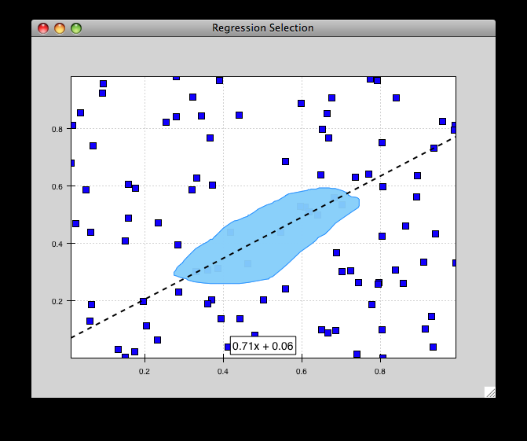
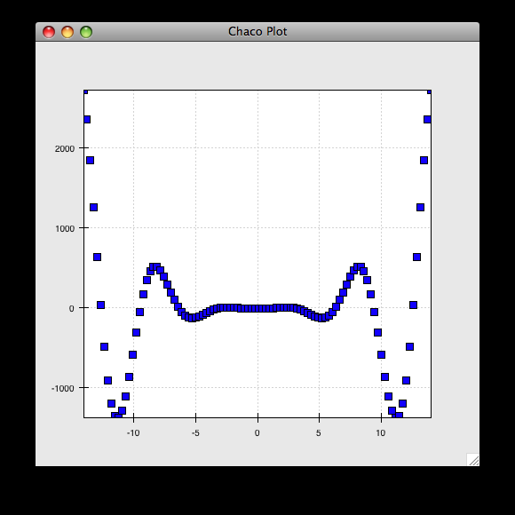
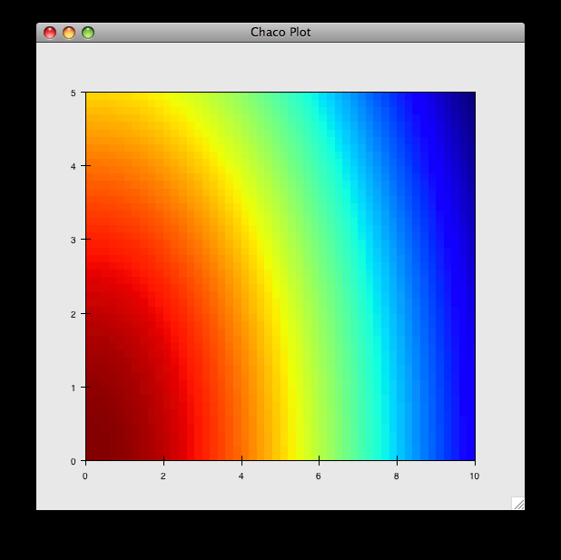
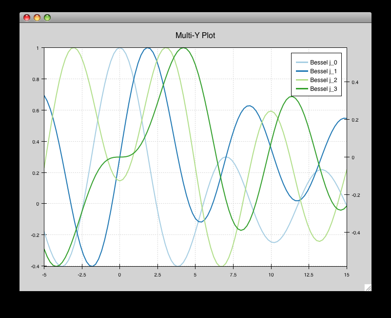
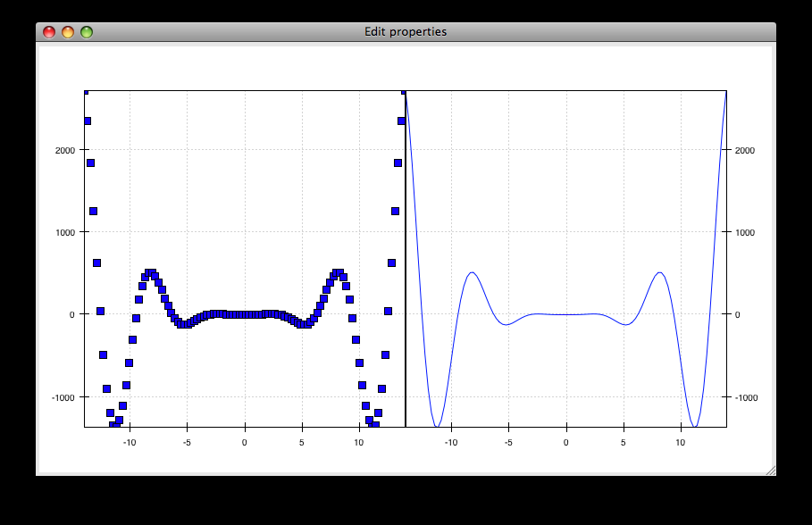
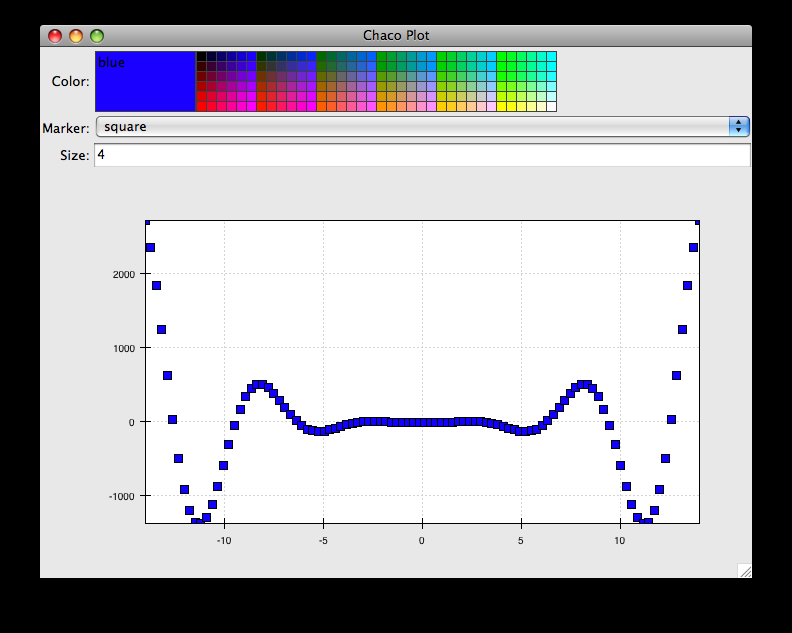

Interactive Plotting with Chaco¶
Overview¶
This tutorial is an introduction to Chaco. We’re going to build several mini-applications of increasing capability and complexity. Chaco was designed to be used primarily by scientific programmers, and this tutorial requires only basic familiarity with Python.
Knowledge of NumPy can be helpful for certain parts of the tutorial. Knowledge of GUI programming concepts such as widgets, windows, and events are helpful for the last portion of the tutorial, but it is not required.
This tutorial demonstrates using Chaco with Traits UI, so knowledge of the Traits framework is also helpful. We don’t use very many sophisticated aspects of Traits or Traits UI, and it is entirely possible to pick it up as you go through the tutorial. This tutorial applies to Enthought Tool Suite version 3.x.
It’s also worth pointing out that you don’t have to use Traits UI in order to use Chaco — you can integrate Chaco directly with Qt or wxPython — but for this tutorial, we use Traits UI to make things easier.
Goals¶
By the end of this tutorial, you will have learned how to:
- create Chaco plots of various types
- arrange plots of data items in various layouts
- configure and interact with your plots using Traits UI
- create a custom plot overlay
- create a custom tool that interacts with the mouse
Introduction¶
Chaco is a plotting application toolkit. This means that it can build both static plots and dynamic data visualizations that let you interactively explore your data. Here are four basic examples of Chaco plots:

This plot shows a static “tornado plot” with a categorical Y axis and continuous X axis. The plot is resizable, but the user cannot interact or explore the data in any way.

This is an overlaid composition of line and scatter plots with a legend. Unlike the previous plot, the user can pan and zoom this plot, exploring the relationship between data curves in areas that appear densely overlapping. Furthermore, the user can move the legend to an arbitrary position on the plot, and as they resize the plot, the legend maintains the same screen-space separation relative to its closest corner.
This example starts to demonstrate interacting with the dataset in an exploratory way. Whereas interactivity in the previous example was limited to basic pan and zoom (which are fairly common in most plotting libraries), this is an example of a more advanced interaction that allows a level of data exploration beyond the standard view manipuations.
With this example, the user can select a region of data space, and a simple line fit is applied to the selected points. The equation of the line is then displayed in a text label.
The lasso selection tool and regression overlay are both built in to Chaco, but they serve an additional purpose of demonstrating how one can build complex data-centric interactions and displays on top of the Chaco framework.

This is a much more complex demonstration of Chaco’s capabilities. The user can view the cross sections of a 2-D scalar-valued function. The cross sections update in real time as the user moves the mouse, and the “bubble” on each line plot represents the location of the cursor along that dimension. By using drop-down menus (not show here), the user can change plot attributes like the colormap and the number of contour levels used in the center plot, as well as the actual function being plotted.
Script-oriented Plotting¶
We distinguish between “static” plots and “interactive visualizations” because these different applications of a library affect the structure of how the library is written, as well as the code you write to use the library.
Here is a simple example of the “script-oriented” approach for creating a static plot. This is probably familiar to anyone who has used Gnuplot, MATLAB, or Matplotlib:
1 2 3 4 5 6 7 8 9 10 | from numpy import *
from enthought.chaco.shell import *
x = linspace(-2*pi, 2*pi, 100)
y = sin(x)
plot(x, y, "r-")
title("First plot")
ytitle("sin(x)")
show()
|

The basic structure of this example is that we generate some data, then we call functions to plot the data and configure the plot. There is a global concept of “the active plot”, and the functions do high-level manipulations on it. The generated plot is then usually saved to disk for inclusion in a journal article or presentation slides.
Now, as it so happens, this particular example uses the chaco.shell script plotting package, so when you run this script, the plot that Chaco opens does have some basic interactivity. You can pan and zoom, and even move forwards and backwards through your zoom history. But ultimately it’s a pretty static view into the data.
Application-oriented Plotting¶
The second approach to plotting can be thought of as “application-oriented”, for lack of a better term. There is definitely a bit more code, and the plot initially doesn’t look much different, but it sets us up to do more interesting things, as you’ll see later on:
1 2 3 4 5 6 7 8 9 10 11 12 13 14 15 16 17 18 19 20 21 22 23 24 | from enthought.traits.api import HasTraits, Instance
from enthought.traits.ui.api import View, Item
from enthought.chaco.api import Plot, ArrayPlotData
from enthought.enable.component_editor import ComponentEditor
from numpy import linspace, sin
class LinePlot(HasTraits):
plot = Instance(Plot)
traits_view = View(
Item('plot',editor=ComponentEditor(), show_label=False),
width=500, height=500, resizable=True, title="Chaco Plot")
def __init__(self):
super(LinePlot, self).__init__()
x = linspace(-14, 14, 100)
y = sin(x) * x**3
plotdata = ArrayPlotData(x=x, y=y)
plot = Plot(plotdata)
plot.plot(("x", "y"), type="line", color="blue")
plot.title = "sin(x) * x^3"
self.plot = plot
if __name__ == "__main__":
LinePlot().configure_traits()
|
This produces a plot similar to the previous script-oriented code snippet:

So, this is our first “real” Chaco plot. We’ll walk through this code and look at what each bit does. This example serves as the basis for many of the later examples.
Understanding the First Plot¶
Let’s start with the basics. First, we declare a class to represent our plot, called LinePlot:
class LinePlot(HasTraits):
plot = Instance(Plot)
This class uses the Enthought Traits package, and all of our objects subclass from HasTraits.
Next, we declare a Traits UI View for this class:
traits_view = View(
Item('plot',editor=ComponentEditor(), show_label=False),
width=500, height=500, resizable=True, title="Chaco Plot")
Inside this view, we are placing a reference to the plot trait and telling Traits UI to use the ComponentEditor (imported from enthought.enable.component_editor) to display it. If the trait were an Int or Str or Float, Traits could automatically pick an appropriate GUI element to display it. Since Traits UI doesn’t natively know how to display Chaco components, we explicitly tell it what kind of editor to use.
The other parameters in the View constructor are pretty self-explanatory, and the Traits UI User’s Guide documents all the various properties you can set here. For our purposes, this Traits View is sort of boilerplate. It gets us a nice little window that we can resize. We’ll be using something like this View in most of the examples in the rest of the tutorial.
Now, let’s look at the constructor, where the real work gets done:
def __init__(self):
super(LinePlot, self).__init__()
x = linspace(-14, 14, 100)
y = sin(x) * x**3
plotdata = ArrayPlotData(x=x, y=y)
The first thing we do here is call the super-class’s __init__() method, which ensures that all the Traits machinery is properly set up, even though the __init__() method is overridden. Then we create some mock data, just like in the script-oriented approach. But rather than directly calling some sort of plotting function to throw up a plot, we create this ArrayPlotData object and stick the data in there. The ArrayPlotData object is a simple structure that associates a name with a NumPy array.
In a script-oriented approach to plotting, whenever you have to update the data or tweak any part of the plot, you basically re-run the entire script. Chaco’s model is based on having objects representing each of the little pieces of a plot, and they all use Traits events to notify one another that some attribute has changed. So, the ArrayPlotData is an object that interfaces your data with the rest of the objects in the plot. In a later example we’ll see how we can use the ArrayPlotData to quickly swap data items in and out, without affecting the rest of the plot.
The next line creates an actual Plot object, and gives it the ArrayPlotData instance we created previously:
plot = Plot(plotdata)
Chaco’s Plot object serves two roles: it is both a container of renderers, which are the objects that do the actual task of transforming data into lines and markers and colors on the screen, and it is a factory for instantiating renderers. Once you get more familiar with Chaco, you can choose to not use the Plot object, and instead directly create renderers and containers manually. Nonetheless, the Plot object does a lot of nice housekeeping that is useful in a large majority of use cases.
Next, we call the plot() method on the Plot object we just created:
plot.plot(("x", "y"), type="line", color="blue")
This creates a blue line plot of the data items named “x” and “y”. Note that we are not passing in an actual array here; we are passing in the names of arrays in the ArrayPlotData we created previously.
This method call creates a new renderer — in this case a line renderer — and adds it to the Plot.
This may seem kind of redundant or roundabout to folks who are used to passing in a pile of NumPy arrays to a plot function, but consider this: ArrayPlotData objects can be shared between multiple Plots. If you want several different plots of the same data, you don’t have to externally keep track of which plots are holding on to identical copies of what data, and then remember to shove in new data into every single one of those plots. The ArrayPlotData object acts almost like a symlink between consumers of data and the actual data itself.
Next, we set a title on the plot:
plot.title = "sin(x) * x^3"
And then we set our plot trait to the new plot:
self.plot = plot
The last thing we do in this script is set up some code to run when the script is executed:
if __name__ == "__main__":
LinePlot().configure_traits()
This one-liner instantiates a LinePlot object and calls its configure_traits() method. This brings up a dialog with a traits editor for the object, built up according to the View we created earlier. In our case, the editor just displays our plot attribute using the ComponentEditor.
Scatter Plots¶
We can use the same pattern to build a scatter plot:
1 2 3 4 5 6 7 8 9 10 11 12 13 14 15 16 17 18 19 20 21 22 23 24 | from enthought.traits.api import HasTraits, Instance
from enthought.traits.ui.api import View, Item
from enthought.chaco.api import Plot, ArrayPlotData
from enthought.enable.component_editor import ComponentEditor
from numpy import linspace, sin
class ScatterPlot(HasTraits):
plot = Instance(Plot)
traits_view = View(
Item('plot',editor=ComponentEditor(), show_label=False),
width=500, height=500, resizable=True, title="Chaco Plot")
def __init__(self):
super(ScatterPlot, self).__init__()
x = linspace(-14, 14, 100)
y = sin(x) * x**3
plotdata = ArrayPlotData(x = x, y = y)
plot = Plot(plotdata)
plot.plot(("x", "y"), type="scatter", color="blue")
plot.title = "sin(x) * x^3"
self.plot = plot
if __name__ == "__main__":
ScatterPlot().configure_traits()
|
Note that we have only changed the type argument to the plot.plot() call and the name of the class from LinePlot to ScatterPlot. This produces the following:
Image Plot¶
Image plots can be created in a similar fashion:
1 2 3 4 5 6 7 8 9 10 11 12 13 14 15 16 17 18 19 20 21 22 23 24 25 | from enthought.traits.api import HasTraits, Instance
from enthought.traits.ui.api import View, Item
from enthought.chaco.api import Plot, ArrayPlotData, jet
from enthought.enable.component_editor import ComponentEditor
from numpy import exp, linspace, meshgrid
class ImagePlot(HasTraits):
plot = Instance(Plot)
traits_view = View(
Item('plot', editor=ComponentEditor(), show_label=False),
width=500, height=500, resizable=True, title="Chaco Plot")
def __init__(self):
super(ImagePlot, self).__init__()
x = linspace(0, 10, 50)
y = linspace(0, 5, 50)
xgrid, ygrid = meshgrid(x, y)
z = exp(-(xgrid*xgrid+ygrid*ygrid)/100)
plotdata = ArrayPlotData(imagedata = z)
plot = Plot(plotdata)
plot.img_plot("imagedata", colormap=jet)
self.plot = plot
if __name__ == "__main__":
ImagePlot().configure_traits()
|
There are a few more steps to create the input Z data, and we also call a different method on the Plot object — img_plot() instead of plot(). The details of the method parameters are not that important right now; this is just to demonstrate how we can apply the same basic pattern from the “first plot” example above to do other kinds of plots.
A Slight Modification¶
Earlier we said that the Plot object is both a container of renderers and a factory (or generator) of renderers. This modification of the previous example illustrates this point. We only create a single instance of Plot, but we call its plot() method twice. Each call creates a new renderer and adds it to the Plot object’s list of renderers. Also notice that we are reusing the x array from the ArrayPlotData:
1 2 3 4 5 6 7 8 9 10 11 12 13 14 15 16 17 18 19 20 21 22 23 | from enthought.traits.api import HasTraits, Instance
from enthought.traits.ui.api import View, Item
from enthought.chaco.api import Plot, ArrayPlotData
from enthought.enable.component_editor import ComponentEditor
from numpy import cos, linspace, sin
class OverlappingPlot(HasTraits):
plot = Instance(Plot)
traits_view = View(
Item('plot',editor=ComponentEditor(), show_label=False),
width=500, height=500, resizable=True, title="Chaco Plot")
def __init__(self):
super(OverlappingPlot).__init__()
x = linspace(-14, 14, 100)
y = x/2 * sin(x)
y2 = cos(x)
plotdata = ArrayPlotData(x=x, y=y, y2=y2)
plot = Plot(plotdata)
plot.plot(("x", "y"), type="scatter", color="blue")
plot.plot(("x", "y2"), type="line", color="red")
self.plot = plot
if __name__ == "__main__":
OverlappingPlot().configure_traits()
|

Container Overview¶
So far we’ve only seen single plots, but frequently we need to plot data side by side. Chaco uses various subclasses of Container to do layout. Horizontal containers (HPlotContainer) place components horizontally:

Vertical containers (VPlotContainer) array component vertically:

Grid container (GridPlotContainer) lays plots out in a grid:

Overlay containers (OverlayPlotContainer) just overlay plots on top of each other:
You’ve actually already seen OverlayPlotContainer — the Plot class is actually a special subclass of OverlayPlotContainer. All of the plots inside this container appear to share the same X- and Y-axis, but this is not a requirement of the container. For instance, the following plot shows plots sharing only the X-axis:
Using a Container¶
Containers can have any Chaco component added to them. The following code creates a separate Plot instance for the scatter plot and the line plot, and adds them both to the HPlotContainer object:
1 2 3 4 5 6 7 8 9 10 11 12 13 14 15 16 17 18 19 20 21 22 23 24 | from enthought.traits.api import HasTraits, Instance
from enthought.traits.ui.api import View, Item
from enthought.chaco.api import HPlotContainer, ArrayPlotData, Plot
from enthought.enable.component_editor import ComponentEditor
from numpy import linspace, sin
class ContainerExample(HasTraits):
plot = Instance(HPlotContainer)
traits_view = View(Item('plot', editor=ComponentEditor(), show_label=False),
width=1000, height=600, resizable=True, title="Chaco Plot")
def __init__(self):
super(ContainerExample, self).__init__()
x = linspace(-14, 14, 100)
y = sin(x) * x**3
plotdata = ArrayPlotData(x=x, y=y)
scatter = Plot(plotdata)
scatter.plot(("x", "y"), type="scatter", color="blue")
line = Plot(plotdata)
line.plot(("x", "y"), type="line", color="blue")
container = HPlotContainer(scatter, line)
self.plot = container
if __name__ == "__main__":
ContainerExample().configure_traits()
|
This produces the following plot:

There are many parameters you can configure on a container, like background color, border thickness, spacing, and padding. We insert some more lines between lines 20 and 21 of the previous example to make the two plots touch in the middle:
container = HPlotContainer(scatter, line)
container.spacing = 0
scatter.padding_right = 0
line.padding_left = 0
line.y_axis.orientation = "right"
self.plot = container
Something to note here is that all Chaco components have both bounds and padding (or margin). In order to make our plots touch, we need to zero out the padding on the appropriate side of each plot. We also move the Y-axis for the line plot (which is on the right hand side) to the right side.
This produces the following:
Editing Plot Traits¶
So far, the stuff you’ve seen is pretty standard: building up a plot of some sort and doing some layout on them. Now we start taking advantage of the underlying framework.
Chaco is written using Traits. This means that all the graphical bits you see — and many of the bits you don’t see — are all objects with various traits, generating events, and capable of responding to events.
We’re going to modify our previous ScatterPlot example to demonstrate some of these capabilities. Here is the full listing of the modified code:
1 2 3 4 5 6 7 8 9 10 11 12 13 14 15 16 17 18 19 20 21 22 23 24 25 26 27 28 29 30 31 32 33 34 35 36 37 38 39 40 41 42 43 | from enthought.traits.api import HasTraits, Instance, Int
from enthought.traits.ui.api import View, Group, Item
from enthought.enable.api import ColorTrait
from enthought.enable.component_editor import ComponentEditor
from enthought.chaco.api import marker_trait, Plot, ArrayPlotData
from numpy import linspace, sin
class ScatterPlotTraits(HasTraits):
plot = Instance(Plot)
color = ColorTrait("blue")
marker = marker_trait
marker_size = Int(4)
traits_view = View(
Group(Item('color', label="Color", style="custom"),
Item('marker', label="Marker"),
Item('marker_size', label="Size"),
Item('plot', editor=ComponentEditor(), show_label=False),
orientation = "vertical"),
width=800, height=600, resizable=True, title="Chaco Plot")
def __init__(self):
super(ScatterPlotTraits, self).__init__()
x = linspace(-14, 14, 100)
y = sin(x) * x**3
plotdata = ArrayPlotData(x = x, y = y)
plot = Plot(plotdata)
self.renderer = plot.plot(("x", "y"), type="scatter", color="blue")[0]
self.plot = plot
def _color_changed(self):
self.renderer.color = self.color
def _marker_changed(self):
self.renderer.marker = self.marker
def _marker_size_changed(self):
self.renderer.marker_size = self.marker_size
if __name__ == "__main__":
ScatterPlotTraits().configure_traits()
|
Let’s step through the changes.
First, we add traits for color, marker type, and marker size:
class ScatterPlotTraits(HasTraits):
plot = Instance(Plot)
color = ColorTrait("blue")
marker = marker_trait
marker_size = Int(4)
We also change our Traits UI View to include references to these new traits. We put them in a Traits UI Group so that we can control the layout in the dialog a little better — here, we’re setting the layout orientation of the elements in the dialog to “vertical”.
traits_view = View(
Group(
Item('color', label="Color", style="custom"),
Item('marker', label="Marker"),
Item('marker_size', label="Size"),
Item('plot', editor=ComponentEditor(), show_label=False),
orientation = "vertical" ),
width=500, height=500, resizable=True,
title="Chaco Plot")
Now we have to do something with those traits. We modify the constructor so that we grab a handle to the renderer that is created by the call to plot():
self.renderer = plot.plot(("x", "y"), type="scatter", color="blue")[0]
Recall that a Plot is a container for renderers and a factory for them. When called, its plot() method returns a list of the renderers that the call created. In previous examples we’ve been just ignoring or discarding the return value, since we had no use for it. In this case, however, we grab a reference to that renderer so that we can modify its attributes in later methods.
The plot() method returns a list of renderers because for some values of the type argument, it will create multiple renderers. In our case here, we are just doing a scatter plot, and this creates just a single renderer.
Next, we define some Traits event handlers. These are specially-named methods that are called whenever the value of a particular trait changes. Here is the handler for color trait:
def _color_changed(self):
self.renderer.color = self.color
This event handler is called whenever the value of self.color changes, whether due to user interaction with a GUI, or due to code elsewhere. (The Traits framework automatically calls this method because its name follows the name template of _traitname_changed.) Since this method is called after the new value has already been updated, we can read out the new value just by accessing self.color. We just copy the color to the scatter renderer. You can see why we needed to hold on to the renderer in the constructor.
Now we do the same thing for the marker type and marker size traits:
def _marker_changed(self):
self.renderer.marker = self.marker
def _marker_size_changed(self):
self.renderer.marker_size = self.marker_size
Running the code produces an app that looks like this:
Depending on your platform, the color editor/swatch at the top may look different. This is how it looks on Mac OS X. All of the controls here are “live”. If you modify them, the plot updates.